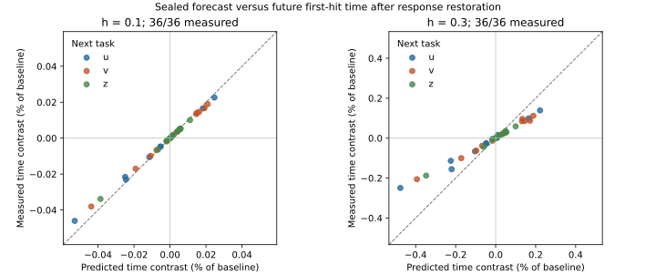

SFP — общее пространство научной приёмки
SFP: общее пространство проверки
Независимая приёмка: ожидается. Приоритет и публикация: HOLD.
Весь текст одним документом · ZIP с кодом и результатами · Текущая версия
Объект: MAINTENANCE-BOUNDARY: analytic cost boundary and exact four-task restoration control; neural NO-GO unchanged
Этап: ANALYTIC_CONTROL_COMPLETE; INDEPENDENT_REVIEW_PENDING; NOVELTY_HOLD

Прогноз зафиксирован до историй. h=.30 — основной опыт, NO-GO по величине; h=.10 — диагностика.Снимок: 155bb57762583fd1f9de · SHA-256 dossier: 8b45b6d4ca912bc0d0a0eaeb12285f20ff6dc494fb76c59f1ff3b595a05139f0maintenance_boundary/REPORT_RU.md
Исходный Markdown
# MAINTENANCE-BOUNDARY: ответ на GO Советника
Дата: 2026-10-02. Статус: аналитическая конструкция исполнителя, независимая приёмка ожидается. Приоритет и публикация HOLD.
## Решение в одном абзаце
Баланс Советника верен для объявленного евклидова градиентного закона. Его можно связать с фактическим провалом будущей задачи через положительный зазор конечновременной ошибки. Универсальный закон Фабла `T ε² ≳ repair` без ограничения управления не следует: изменение темпа прохождения одной траектории опровергает такую формулировку. Построен точный контроль на пяти исходных проводимостях: один явно заданный структурный регулятор возвращает четыре заранее объявленные задачи в бюджет, сохраняя текущие выходы и норму. Это демонстрация осуществимости и цены внутри конкретного класса управления, **не трофей и не установленный новый механизм природы**.
## Что выполнено
1. Проверены баланс, интегрирование по частям и границы их применения.
2. Дана количественная связь положительного расстояния до восстановления с реальным конечновременным провалом задачи.
3. Предъявлена конструкция healthy → damaged → repaired с точными временами обучения. Повреждение в ней — внешнее коррелированное изменение параметров; происхождение повреждения из обычной обучающей истории не доказано.
4. Найдены достижимые минимальные время и параметрическое действие обслуживания **для одного заранее объявленного одномерного регулятора**.
5. Символьный код выводит физический якобиан из Кирхгофа, проверяет полное поле по пяти проводимостям и редукции. Новых траекторий, циклов, случайных сетей и нейросетевых прогонов нет.
## Численный смысл точных выражений
Четыре возможные следующие задачи — два знака общего и два знака разностного сдвига обоих выходов на 0.05. Точность — 0.01 в совместной евклидовой норме. Следующая задача неизвестна обслуживанию. Единый бюджет B определён в доказательстве через точный положительный интеграл.
| Состояние | Худшее фактическое время среди четырёх задач / B | Нынешний ответ | Норма |
|---|---:|---|---|
| Исходное исправное | 10/13 | (1/2,1/2) | K |
| После внешнего повреждения | 5/2 | (1/2,1/2) | K |
| После минимального ремонта данным регулятором | 1 | (1/2,1/2) | K |
Общие задачи при ремонте могут замедлиться, оставаясь внутри B. Восстанавливается допустимость всего класса; улучшение каждой скорости не утверждается. Масштабирование всех проводимостей исключено фиксированной нормой. Четыре задачи — конечный класс, не все направления и амплитуды в шаре.
## Возражения Фаблу
**Квадратичная цена.** Второй порядок эффекта одного малого контура не даёт универсального закона суммарного времени обслуживания. В PROOF_RU.md указан точный перенос по времени; без ограничений на цели время можно уменьшать при неизменных геометрическом пути и максимальном нарушении функции. Это не опровержение закона в отдельно заданном классе ограниченных управлений. Вариация целей в формуле Советника — существенный ресурс.
**28% против 2.9%.** Это нельзя повторно использовать как установленный провал расчёта конечного времени: в восстановительном разборе сравнивались разные наблюдаемые, а исправленный конечновременной расчёт дал около 2.873%. Исходные нейросетевые NO-GO и их 36 основных строк при этом сохраняются; траектории здесь не перезапускались.
**Известный reset.** Это сильное возражение. Наш регулятор координирует пять физических элементов по одной ручке. Называть его новым механизмом обслуживания без доказательства физической реализуемости, доступной информации и отличия от известного перераспределения ресурсов нельзя.
## Что пока НЕ получено
- Не доказана деградация от обычного обучения с последующим ремонтом; повреждающий процесс задан извне.
- Не найден глобально минимальный ремонт среди всех возможных механизмов, состояний и архитектур.
- Метрика проводимостей и интеграл квадрата скорости не названы энергией или биологической ценой.
- Сохранён текущий двухвыходный ответ при одном возбуждении, не полный портовый оператор и не функция на всех входах.
- Общая граница расстояния через непрерывную зависимость может быть очень грубой; численная полезность не заявлена.
- Не доказана применимость к сбережению навыков, критическим периодам или RL. Эти аналогии не проверены.
## Рекомендация Советнику
Принять этот пакет как контроль корректности постановки, **не открывать по нему очередную статью или серию малых прогонов**. Следующий содержательный выбор должен назвать физический источник потери пластичности и реально доступный независимый процесс её восстановления. Для пяти рёбер вопрос теперь не «можно ли написать регулятор»: можно, и его цена вычисляется. Незакрытый вопрос — почему система получает повреждение и какой естественный/реализуемый процесс возвращает возможности без знания будущей задачи.
Если сохраняется требование трофея как объяснения крупного явления, я бы следующим шагом сопоставлял этот вопрос с потерей пластичности в continual learning: там можно явно назвать закон обновления, повреждающую историю, доступное вмешательство и сильный reset-baseline. Это выбор направления, не заявление о новизне и не разрешение нового большого бенчмарка. Критические периоды и сбережение требуют существенно более сильной связи модели с биологическими наблюдаемыми.
## Чтение
- PROOF_RU.md — баланс, нижняя граница расстояния, точные времена и цена регулятора.
- AUDIT_RU.md — область действия и опровержимые утверждения.
- check_symbolic.py / RESULTS.json — символьная проверка; не независимая приёмка.
Известный диссипативный baseline: A. van der Schaft, *Interconnections of input-output Hamiltonian systems with dissipation*, https://arxiv.org/html/1603.04019 . Связь с IOHD не является заявкой на приоритет. Конкуренты по пластичности: Dohare et al., https://www.nature.com/articles/s41586-024-07711-7 ; Falk et al., https://pmc.ncbi.nlm.nih.gov/articles/PMC10319023/ . Исчерпывающего поиска приоритета здесь нет.
maintenance_boundary/PROOF_RU.md
Исходный Markdown
# Аналитическое приложение: граница обслуживания и точный контроль
Авторский вывод, 2026-10-02. Независимая приёмка ожидается. Ниже доказательства, а не вывод из числа программных проверок.
## 1. Баланс Советника и необходимые условия
Пусть q:U⊂Rⁿ→Rʳ гладко, x абсолютно непрерывна в U, η>0 постоянно,
xdot = η J(x)ᵀ(w−q(x)), J=Dq.
Тогда почти всюду
||xdot||²/η = (w−q)ᵀ qdot.
Поэтому q(x(t))≡q0 влечёт xdot=0 почти всюду, независимо от ранга J. Здесь q включает ВСЕ объявленные сохраняемые выходы, и управление — только цель w. Дополнительное воздействие меняет предпосылки.
Пусть w имеет ограниченную вариацию, y=q−q0, y(0)=y(T)=0, sup||y||≤ε. Поскольку y непрерывна, интегрирование по частям Стилтьеса применимо и к скачкам w:
(1/η)∫||xdot||²dt
= ∫(w−q0)ᵀdy − 1/2[||y||²]₀ᵀ
= −∫yᵀdw ≤ ε Var(w).
Коши–Шварц даёт
||x(T)−x(0)||² ≤ T∫||xdot||²dt ≤ η T ε Var(w).
При приблизительном возврате y(T)≠0 возникают граничные члены; приведённая формула без них неприменима. Здесь не доказан перенос на CL, произвольную проекцию или переменную метрику. Действие в пространстве параметров не равно автоматически физической энергии.
### Почему универсальная оценка T ε² не следует
Для любого допустимого пути и c>1 зададим на [0,T/c]
x_c(t)=x(ct),
w_c(t)=q(x(ct))+c[w(ct)−q(x(ct))].
Непосредственная подстановка даёт тот же градиентный закон при той же η. Начальная и конечная точки, путь и максимальное отклонение q совпадают, время уменьшено в c раз. Для гладкого q на компактном пути и BV-цели новая цель также BV; однако её амплитуда и вариация не ограничены равномерно по c. Следовательно, положительная универсальная нижняя граница на T ε² при фиксированном ремонте требует дополнительных ограничений управления. При заданном диапазоне целей это ускорение может быть запрещено. Второй порядок одной фиксированной малой петли не решает вопрос о всех протоколах.
## 2. Расстояние до ремонта из реального провала задачи
Фиксируем семейство F, точность δ>0, бюджет B и закон будущего обучения. Пусть Φ_t^f(x) — решение с постоянной целью w_f. Для квадратичного евклидова градиентного обучения ошибка монотонна, поэтому достижение δ не позже B эквивалентно
E_f(x):=||q(Φ_B^f(x))−w_f|| ≤ δ.
Предполагаем существование решений и общую регулярную область. Пусть у повреждённого x_D есть свидетель f∈F с E_f(x_D)≥δ+m, m>0. Пусть E_f L_B-липшицева в шаре радиуса r>0 вокруг x_D, L_B>0. Любое восстановленное x_R внутри шара удовлетворяет
m ≤ E_f(x_D)−E_f(x_R) ≤ L_B||x_D−x_R||.
Снаружи расстояние не меньше r. Поэтому для множества всех восстановленных состояний, в том числе с дополнительными ресурсными ограничениями,
d_rec ≥ min{r,m/L_B} > 0.
Если q L_q-липшицева, а векторное поле будущего обучения L_F-липшицево на общей прямой трубке решений, достаточно L_B=L_q exp(L_F B) по Гронуоллу. Это грубая стандартная оценка непрерывной зависимости, не новый принцип. Объединение с §1 даёт необходимое условие
min{r,m/L_B}² ≤ η T ε Var(w).
Без положительного зазора, регулярной трубки и оценки L_B вычислимый порог не получен. Для немонотонной ошибки следует использовать минимум ошибки на [0,B] с равномерной оценкой по времени, а не молча подменять достижение конечной ошибкой. Переходы через сингулярные поддержки требуют отдельного доказательства.
## 3. Пять исходных физических проводимостей
Пины s=1,g=0, выходы u,v. Порядок рёбер (su,ug,sv,vg,uv). Для положительных k:
L_D = [[k_su+k_ug+k_uv, −k_uv],
[−k_uv, k_sv+k_vg+k_uv]],
q = L_D⁻¹(k_su,k_sv)ᵀ.
Будущее обучение: kdot=−Jᵀ(q−w), η=1, L=||q−w||²/2. Все пять исходных проводимостей обучаются в евклидовой метрике.
Начальные состояния для будущих задач:
k=(a,a,a,a,h), a,h>0,
q0=(1/2,1/2), ||k||²=4a²+h²=K².
Объявлен один внешний регулятор, при обслуживании обычное обучение выключено:
k(φ)=K(cosφ/2,cosφ/2,cosφ/2,cosφ/2,sinφ),
φ_H=arctan(1/8) ≤ φ ≤ φ_D=arctan(2).
Этот регулятор координирует пять элементов одним скалярным сигналом. Он сохраняет q0, норму и положительность. ||dk/dφ||=K. Это ресурсная модель, не готовая аппаратная схема.
Исходно φ=φ_H. Повреждающая история — монотонное внешнее увеличение φ до φ_D. Она сохраняет нынешний ответ, но ниже доказано, что теряет допустимость класса задач. Это **не установленный результат повреждения самим обучением**.
## 4. Заранее заданный класс и точные времена
Пусть d=1/20, δ=1/100 и
F={q0+d(1,1), q0−d(1,1), q0+d(1,−1), q0−d(1,−1)}.
После обслуживания выбирают одну из этих четырёх целей. Остальные не предъявляются последовательно: каждое время измеряет альтернативное продолжение из одного и того же восстановленного состояния.
### Общая положительная цель
Инвариантная по симметрии форма k=(a+x,a−x,a+x,a−x,h) даёт q=(1/2+x/(2a),1/2+x/(2a)). При e=d−x/(2a):
adot=−ex/(4a²), xdot=e/(4a), hdot=0.
Это редукция полного физического градиента, с учётом четырёх повторяющихся координат, а не градиент по a,x с ошибочно единичной метрикой. Сохраняется a²+x²=a0². Для r=x/a:
rdot=(d−r/2)(1+r²)²/(4a0²).
### Разностная положительная цель
Инвариантная форма k=(a+x,a−x,a−x,a+x,h), A=a+h, даёт q=(1/2+x/(2A),1/2−x/(2A)). При e=d−x/(2A):
adot=−ex/(4A²), xdot=e/(4A), hdot=−ex/A²=4adot.
Сохраняются A²+5x²=A0² и h−4a=h0−4a0. Для r=x/A:
rdot=(d−r/2)(1+5r²)²/(4A0²).
Отрицательные цели получаются перестановкой ветвей к пинам; времена совпадают. В обеих задачах совместная ошибка √2(d−r/2) достигает δ при
r*=2(d−δ/√2)=1/10−√2/100, 0<r*<1/10.
Определим конечные положительные интегралы
C_c=4∫₀^{r*} dr /[(d−r/2)(1+c r²)²].
Тогда **точные конечные времена**, не линеаризованные скорости:
τ_common=C_1 a0²,
τ_diff=C_5 (a0+h0)².
### Положительность до достижения δ
Для общей задачи |x|/a=r≤r*<0.1 и h>0. Для разностной p=h0/a0∈[1/4,4]. Неравенство (1+u)^−1/2≥1−u/2 даёт
A≥A0(1−5r²/2),
a=a0+(A−A0)/5 ≥a0−A0r²/2 ≥0.975a0,
|x|=rA <0.1A0≤0.5a0,
h=h0+4(A−A0)/5 ≥h0−2A0r²
>a0[p−0.02(1+p)]>0.
Таким образом, все физические рёбра положительны до требуемой точности; никаких неучтённых проекций на грани нет.
### Потеря и восстановление класса
Отношение интегралов ограничено отношением их подынтегральных функций:
C_1/C_5 ≤(1+5r*²)² <441/400 <25/16.
На объявленном интервале h/a≥1/4, поэтому (a+h)²/a²≥25/16. Худшая задача всегда разностная. Фиксируем один бюджет для всех состояний:
B=C_5 K²/2.
В здоровой точке a_H=4K/√65, h_H=K/√65:
max_F τ/B = 2(a_H+h_H)²/K² = 10/13 <1.
В повреждённой точке a_D=K/(2√5), h_D=2K/√5:
max_F τ/B = 2(a_D+h_D)²/K² = 5/2 >1.
Это заранее объявленные конечные задачи и фиксированный бюджет, не подстановка якобиана вместо фактического обучения. Конструкция подобрана аналитически, не является preregistered эмпирическим открытием.
## 5. Достижимая цена одного регулятора
На [φ_H,φ_D] величина (a+h)/K=cosφ/2+sinφ возрастает. Условие восстановления всего F:
(cosφ/2+sinφ)² ≤1/2
⇔ φ≤φ_c:=arctan(√(3/2)−1).
Здесь φ_H<φ_c<φ_D. Пусть Δφ=φ_D−φ_c>0. При ограничении физической скорости регулятора ||kdot||≤v:
T_min=K Δφ/v.
Нижняя граница — длина необходимого участка / v; достигается движением φ с постоянной скоростью до φ_c. Для заданной длительности T:
min ∫₀ᵀ||kdot||²dt = K² Δφ²/T,
по Коши–Шварцу, с тем же достигающим протоколом (при совместимом v). Минимальная хорда до восстановленного множества **на этой дуге** равна 2K sin(Δφ/2).
Эта хорда НЕ является нижней границей расстояния до всех восстановленных состояний на пятимерной ресурсной сфере. Нельзя подставлять её в §1 для произвольных управлений целями. Общая связь обеспечивается §2 при проверенных константах.
Точно сохраняющее q0 обычное обучение не сдвинет k (§1). Регулятор достигает ремонта, поскольку добавляет независимое направление изменения носителя. При ненулевом допуске ε оптимальность относительно любых целевых протоколов не доказана. Сравнивать здесь конечные значения действия регулятора с необходимой ценой другого класса управления как равные ресурсы также нельзя.
## 6. Приоритет и смысл
Баланс §1 — специализация известной диссипативной структуры IOHD (van der Schaft, arXiv:1603.04019). §2 — обычная непрерывная зависимость решений. §3–5 — явно решаемый контроль для нашей постановки; неизвестность его точной записи в литературе не доказывает новизну механизма. Это контроль границы «ошибка задачи / отдельное обслуживание» с настоящими временами. Ни закон природного старения, ни механизм биологического восстановления, ни новый общий оптимальный control-result здесь не установлены.
maintenance_boundary/AUDIT_RU.md
Исходный Markdown
# Adversarial audit — MAINTENANCE-BOUNDARY
1. **Finite-sample noise:** нет статистической выборки; формулы требуют доказательства, а не p-value.
2. **Density:** одна фиксированная топология; ни вывода о всех сетях, ни density-matched эффекта нет.
3. **Event size:** четыре фиксированные альтернативные задачи одной амплитуды. Большие циклы не исследованы.
4. **Hidden common input:** регулятор координирует все пять проводимостей; это явный дополнительный ресурс, не скрытая способность обычного обучения.
5. **Contexts:** нынешний ответ при одном возбуждении и будущие целевые ответы различены. Полный портовый оператор не сохраняется.
6. **Nonstationarity:** повреждение задано внешней историей; нельзя приписывать его обучению или возрасту.
7. **Binning:** нет дискретизации времени и окон. Времена заданы точными интегралами.
8. **Leakage:** будущая задача не передаётся регулятору; семейство известно. Конструкция аналитически подобрана для доказательства существования, не выдается за слепой прогноз.
9. **Multiple testing:** новых поисков/переборов/прогонов нет. Независимая проверка доказательства ещё нужна.
10. **Stronger baseline:** прямой структурный reset объясняет ремонт; это главный риск отсутствия новизны. Равномерное уменьшение проводимостей запрещено фиксированной нормой.
11. **Latent explanation:** модель полностью задана, higher-order/non-graphability claim отсутствует.
12. **Carrier:** пять исходных проводимостей; физическая евклидова метрика учтена в редукции.
13. **Observable:** точное первое достижение совместной ошибки δ четырьмя альтернативными задачами, не trace/rank/начальная производная.
14. **Generalization:** только объявленные четыре задачи и семейство симметричных состояний. Распространение на биологию/ML не получено.
15. **Falsifier:** ошибка в полном физическом поле, нарушенная положительность до r*, либо отсутствие заявленного неравенства времён ломают конструкцию. Известный эквивалентный регулятор лишает её приоритетного содержания, не алгебраической истинности.
## Проверка исполнения
check_symbolic.py начинает с полного L_D и q=L_D^{-1}b, дифференцирует по пяти исходным k и сравнивает полный физический градиент с редукциями. Это уменьшает риск ошибочного коэффициента метрики; символьный код написан тем же исполнителем и независимым аудитом не является. Положительность, сравнение интегралов и глобальные ограничения утверждений проверяются в письменном доказательстве.
Результат: 16 точных символьных тождеств; 0 траекторий; 0 случайных состояний. Окружение SymPy 1.14.0. Удаление любого необходимого множителя в ожидаемом поле должно приводить к ненулевому символьному остатку; утверждение о прогоне отдельной mutation-suite не делается.
Вердикт исполнителя: GO на независимое чтение; HOLD на новизну/публикацию; NO-GO на объявление «трофея» и новый большой прогон на основании этого контроля.
neural_transfer/REVIEW_REQUEST_RU.md
Исходный Markdown
# Советнику / Фаблу: итог единственного разрешённого переноса
Мандат выполнен. Новые архивы Downloads разобраны, исходные скрипты и
предварительная фиксация восстановлены; сведения в CONTEXT_RU.md.
К PORT-DELTA, старым шумовым пилотам и MB-ретроспективе не возвращался.
**Решение исполнителя — NO-GO основного количественного прогноза.**
Одна MLP 2–8–1 tanh, 12 начальных состояний, две ориентированные истории,
возврат шести текущих ответов и три будущие задачи. Прогноз
2h²gτΠ_all[Fu,Fv] вычислен и запушен до историй; публичная фиксация
aab53392f1bbf0a8fbfc проверена до исполнения. Код/цели/пороги не менялись.
При основном h=.30:
- знаки 36/36; все восстановления и будущие попадания успешны;
- skill .385 при требовании ≥.5 — FAIL;
- медианная ошибка величины .689 при пределе .5 — FAIL;
- shape skill .602; селективная энергия 35%; линейный контроль PASS;
- медианный контраст .0373% исходных часов, максимум .249%;
- медианное время возврата 265.4 при медиане будущих часов 1.216.
h=.10 имеет skill .983 и ошибку .107, но объявлен диагностическим и
не спасает основной исход. 36 направлений не 36 независимых реплик:
bootstrap использует 12 блоков исходных состояний.
После измерения разложил ошибку по сохранённым конечным параметрам:
потеря точности почти целиком в ведущем описании конечной истории/возврата,
а не в производной конечного события. Это объяснение после опыта,
без новых траекторий и без исправления предварительного прогноза.
Прошу оценить научный остаток, а не разрешить смену h/архитектуры для
спасения стенда. Моя рекомендация — закрыть эту атаку отрицательным
основным результатом. Локальный знак переносится, но величина при конечной
дозе не прошла, эффект мал, стоимость возврата велика, механизм порядка
известен. Это не предъявляет нового операционного принципа обслуживания.
Общий канал без новой пересылки архивов:
- https://raw.githubusercontent.com/ovdspb-code/psb-research-exchange/main/CURRENT.json
- https://raw.githubusercontent.com/ovdspb-code/psb-research-exchange/main/latest/DOSSIER_RU.md
- https://raw.githubusercontent.com/ovdspb-code/psb-research-exchange/main/latest/neural_transfer/REPORT_RU.md
Начните с CURRENT.json, укажите snapshot и SHA-256 в ответе. Отчёт,
15-пунктовый audit, дизайн, код, неизменённые FORECASTS и все измерения
в одном общем пакете. Независимое чтение/приёмка этого пакета ещё не заявлены.
neural_transfer/REPORT_RU.md
Исходный Markdown
# Предсказательный перенос в MLP: результат одного фиксированного опыта
Дата: 2026-10-02. Авторский вычислительный результат; внешний аудит не заявляется.
**Решение: NO_GO_ON_FINITE_DOSE_PREDICTIVE_TRANSFER**
12 заранее выбранных начальных состояний, одна архитектура 2–8–1 tanh, три будущие задачи, два размера истории. Предсказано именно конечное время первого попадания после возвращения нынешних ответов на шести входах. Метод использует следующую задачу и эталонную траекторию; дешёвого универсального выбора curriculum не получено.
## Краткий результат и решение
| Величина | Основная доза h=.30 | Диагностика h=.10 |
|---|---:|---:|
| Верные знаки | 36/36 | 36/36 |
| Skill, требуется ≥.5 | **.385 — FAIL** | .983 |
| Медианная ошибка величины, требуется ≤.5 | **.689 — FAIL** | .107 |
| Медианный контраст от исходных часов | .0373% | .00582% |
| Максимальный абсолютный контраст | .249% | .0460% |
| Shape skill | .602 | .989 |
| Доля селективной энергии | 35.0% | 30.6% |
36 задач — три зависимых направления в каждом из 12 независимых состояний,
не 36 независимых повторений. Все 72 строки измерены; исключений и цензуры нет.
Не было смены архитектуры, целей, точности или порогов после измерения.
Сходимость на шести текущих входах и линейный контроль прошли, но не меняют
NO-GO двух главных количественных ворот.
Цена возвращения также существенна: при h=.30 медианное время возврата
265.4 (диапазон 159.1–1085.2), при исходном времени следующей задачи
медианно 1.216 (диапазон .655–1.834). Эти часы используют указанную в коде
нормировку потерь; это ресурс идеального потока, не секунды hardware.
Полезного обслуживания или окупаемости вмешательства не показано.
## Диагностика после измерения — не спасение прогноза
По уже сохранённым параметрам θ± вычислено gτ·(θ+−θ−), без новых траекторий
и подгонки коэффициента. Разность sealed prediction−measurement разложена
на остаток ведущего описания истории и остаток линеаризации события:
- RMSE всего относительного контраста при h=.30: 6.95e-4;
- RMSE остатка истории: 6.95e-4;
- RMSE остатка события: 4.24e-7 (около .061% от общей RMSE).
Слагаемые RMSE не аддитивны. Это локализует наблюдавшуюся потерю точности
в конечном маршруте/возврате, а не в неверной формуле производной времени.
Расчёт не является новой априорной гарантией и не заменяет исходный прогноз.
Данные и код: DIAGNOSTICS.json, diagnose_existing.py.
**Рекомендация:** завершить эту фиксированную атаку с отрицательным основным
результатом. Не открывать перебор новых сетей/амплитуд. Меньшая доза поддерживает
локальный механизм, но её малый эффект и известный аппарат не делают из пилота
самостоятельный прорыв. Дальнейшая научная ставка требует содержательного решения
Советника, а не автоматического расширения стенда. Внешний отзыв ещё не получен.
## Предварительная фиксация
FORECASTS.json содержит прогнозы, состояния θ0 и SHA-256 источников; PREREG_RECEIPT.json — удалённый commit до историй. Код исполнения проверяет этот seal. Итоговые состояния не использованы для корректировки прогноза.
## Объявленные критерии
| Критерий | Итог |
|---|---|
| complete_restoration_and_future_hits | PASS |
| fixed_representation_negative_control | PASS |
| sign_prediction | PASS |
| quantitative_skill | FAIL |
| bootstrap_beats_zero | PASS |
| median_relative_error | FAIL |
| selective_shape_skill | PASS |
| selective_shape_energy | PASS |
| response_mismatch_does_not_explain_contrast | PASS |
| predeclared_numerical_refinement | PASS |
| event_derivative_independently_checked | PASS |
## Числа
### h=0.1
```json
{
"expected_rows": 36,
"measured_rows": 36,
"failed_or_censored_rows": 0,
"sign_accuracy": 1.0,
"resolved_rows": 36,
"median_relative_error": 0.10743975706608189,
"max_mismatch_fraction": 0.006453622039523554,
"median_absolute_relative_contrast": 5.819135890688424e-05,
"skill": 0.9827756812434713,
"bootstrap_mse_improvement_CI95": [
8.10970498610748e-09,
4.924061701297639e-08
],
"bootstrap_unit": "initial state, all three tasks as one block",
"shape_skill": 0.9892113189010575,
"shape_energy_fraction": 0.3060727406499086,
"seed_mse_improvement": {
"101": 6.93677191682915e-09,
"102": 1.5363778314510648e-07,
"103": 2.4774897851040358e-08,
"104": 2.130085440797753e-09,
"105": 1.035188258616308e-08,
"106": 2.023501913356467e-08,
"107": 1.3186822820698678e-08,
"108": 1.2438540752831342e-10,
"109": 2.550992996127658e-08,
"110": 1.051405451718096e-08,
"111": 4.108209852971739e-09,
"112": 1.0719594142082632e-08
}
}
```
### h=0.3
```json
{
"expected_rows": 36,
"measured_rows": 36,
"failed_or_censored_rows": 0,
"sign_accuracy": 1.0,
"resolved_rows": 36,
"median_relative_error": 0.6888482869194217,
"max_mismatch_fraction": 0.0002521293799114473,
"median_absolute_relative_contrast": 0.00037253816477714094,
"skill": 0.3854345887329351,
"bootstrap_mse_improvement_CI95": [
1.3944553003279852e-07,
5.001756989145241e-07
],
"bootstrap_unit": "initial state, all three tasks as one block",
"shape_skill": 0.6023670388483408,
"shape_energy_fraction": 0.35033183493951614,
"seed_mse_improvement": {
"101": 2.0844162177836243e-07,
"102": 9.140778529748955e-07,
"103": 1.8201902930627632e-07,
"104": 4.393759422307887e-08,
"105": 1.901286177938878e-07,
"106": 5.085612782796571e-07,
"107": 2.5283051084776756e-07,
"108": 4.3113411345053165e-09,
"109": 9.873211788665395e-07,
"110": 2.051325987045381e-07,
"111": 1.1030100781161265e-07,
"112": 3.1045488977918114e-08
}
}
```
## Что контролировалось
- Нынешняя функция: все шесть объявленных ответов; максимальная L2 невязка 1.0000000974677885e-09.
- Представление заморожено в линейном контроле; максимальная относительная разность времён 3.4344594458471095e-15.
- Остаточное несовпадение: отдельная нормальная диагностическая оценка; она не добавлена к предварительному прогнозу.
- Общая скорость: удалена общая компонента относительных контрастов внутри каждого состояния.
- Статистическая единица: seed; все три задачи остаются одним bootstrap-блоком. Исключённых seeds нет.
- Численный контроль: заранее назначены seeds 101,102; шаг истории уменьшен вдвое, будущая интеграция ужесточена.
## Граница вывода
Это обычный градиентный поток небольшой нелинейной сети на конечном синтетическом наборе. Равенство функций вне шести входов не проверялось. Нет шумового старения, биологического сна, выгодности обслуживания или восстановления всего класса задач. Общий механизм порядка, проекция возврата и чувствительность события известны. Неизвестность мирового приоритета не снимается успешным прогнозом. Непрохождение конечной дозы не спасается диагностикой h=.10.
Предшественник: [Sweeney, 2026](https://proceedings.mlr.press/v306/sweeney26a.html). Его observable — целевая потеря после порядка обновлений; здесь измерено последующее время после возвращения текущих ответов. Подстановка этого функционала в известный аппарат возможна: различие observable само по себе не доказывает новую теорему.
## Следующий шаг
При GO — независимая содержательная оценка этого фиксированного пилота и его остатка относительно литературы. При NO-GO — сохранить все числа, назвать проваленный критерий и завершить данную атаку без смены архитектуры/целей.
neural_transfer/AUDIT_RU.md
Исходный Markdown
# Adversarial audit: один нейросетевой предсказательный перенос
2026-10-02. Собственная критическая проверка исполнителя, не независимый аудит.
Вердикт: **NO-GO на точность прогноза основной конечной дозы h=.30**.
Не выявлен повод менять цели, порог, носитель или радиус уже опубликованных теорем.
## Пятнадцать обязательных вопросов
1. **Finite-sample noise.** Исполнение детерминировано при зафиксированных
начальных состояниях. 12 состояний — малый объём. Задачи одного состояния
зависимы: bootstrap использует блок seed с тремя задачами, не 36 псевдореплик.
Интервал улучшения MSE положителен, однако количественный порог не пройден.
36/36 знаков нельзя интерпретировать как 36 независимых статистических испытаний.
2. **Density artifact.** Графовой плотности здесь нет. Есть избыток параметров:
33 переменных и шесть текущих ограничений. Это позволяет движение по слою
ответов; архитектура и ширина не менялись. На минимальные сети вывод не переносим.
3. **Event-size artifact.** Доза и точность влияют на остаток. h=.30 и .10,
амплитуды .3/.2, δ=.02 объявлены до измерения. Меньшая доза предсказывается
лучше, но не заменяет основной провал. Других доз и δ после исхода не искали.
4. **Hidden common input.** Нет памяти оптимизатора или случайных обновлений.
Обе истории одного seed используют ту же сеть, одни входы и те же четыре
цели. Между порядками отличаются маршруты; представление является наблюдаемым
внутренним состоянием, а не доказательством неизвестного биологического фактора.
5. **Mixture of contexts.** Не объединены EP, CL и MLP. Сеть обучается евклидовым
градиентным потоком средней квадратичной потери. Модели старых архивов описаны
отдельно и не используются для усиления данного результата.
6. **Temporal nonstationarity.** После истории и возврата все будущие задачи
стартуют из сохранённых состояний; поле не меняется со временем. Нелинейность
параметров — предмет опыта, а не внешняя смена режима.
7. **Binning/windowing artifact.** Часы — событие первого достижения, а не
дискретный бин. Попадания трансверсальны. Заранее заданные seeds 101,102 и
уточнение шага дали относительные расхождения контраста <6.0e-8; численная
ошибка на этих состояниях не объясняет 69% ошибки прогноза. Это не строгая
интервальная оценка всей интеграции и не refinement всех 12 состояний.
8. **Train/test leakage.** Прогнозы и SHA кода зафиксированы удалённо и публично
до историй. Контрольные три входа используются для возврата, поэтому они не
считаются незатронутым тестом обобщения. Будущие цели и их эталонные траектории
доступны предиктору; target-blind прогноз и дешёвый curriculum не заявляются.
Нынешние цели порождены исходной сетью: реализуемость возврата локально облегчена.
9. **Multiple testing.** Одна архитектура, заранее выбранные состояния и три
ортогональных направления. Два размера истории объявлены заранее, один
основной. Не исключены неудобные задачи/seeds; все 72 строки сохранены.
Положительные подпункты не меняют общий NO-GO.
10. **Stronger pairwise baseline.** Graph/MaxEnt baseline к этой сети не
применим. Замороженное представление даёт нулевой контраст после возврата.
Общая скорость удалена заранее заданным центрированием трёх относительных
контрастов; остаётся 35% энергии и shape skill .602. Но нулевая модель слаба
для оценки новизны: стандартная геометрия последовательного обучения —
обязательный содержательный предшественник, а не опровергнутый baseline.
11. **Latent-variable explanation.** Изменение внутренних признаков полностью
объясняет допустимое различие будущих траекторий при одинаковых шести ответах.
Не утверждаем истинные higher-order interactions, non-graphability или
отсутствие факторизации через более богатое описание состояния.
12. **Carrier defined.** Параметры, входы, нормировка потери и интеграторы
записаны в коде/config. Гарантируется совпадение на шести точках до ~1e-9,
не равенство функций на R². Линейный контроль использует точный предел
возврата и потому не является сравнением конечной цены обслуживания.
13. **Observable relevant.** Измерено конечное τ после возврата, а не ранг,
trace или начальная скорость. Предварительный градиент τ проверен отдельными
разностями с худшей относительной ошибкой 1.72e-7. Остаточное несовпадение
ответов даёт диагностическую первую производную, не глобальный Lipschitz
bound; её доля ≤.026% основного контраста. Слово «bound» в машинном файле
относится к оценке этого линейного нормального вклада, не точной теореме.
14. **Generalization.** На данном маленьком синтетическом носителе знак
переносится; величина основной дозы не прошла критерий. Нет данных о других
архитектурах, SGD, реальных данных, восстановлении класса задач, биологическом
сне или экономической полезности. Медианный эффект .037%, возврат занимает
сотни единиц времени при будущих задачах около единицы.
15. **Falsification.** Эта попытка уже опровергла сильную операционную гипотезу
«ведущий член достаточен для объявленной конечной дозы и порогов».
Локальный знак/предел поддержаны, но универсальность могла бы быть отвергнута
неверным знаком, нарушением контроля, зависимостью от невосстановленного
ответа или провалом на заранее независимом носителе. Не подменяем это
изменённым h, апостериорным коэффициентом или новым набором целей.
## Проверка механизма и пределов атрибуции
Для ошибки средней квадратичной потери F=-Jᵀe/N и
DF=-(JᵀJ+Σ e_i D²q_i)/N. Оба вычисляются аналитически;
Jacobian и DF дополнительно сверены complex-step до историй.
В θ0 нулевая цель даёт F0=0. Обозначим поля положительных целей A,B,
DF0=C. Поля отрицательных целей в θ0 равны -A,-B, их производные
равны 2C-DA,2C-DB. Суммирование второго порядка четырёх положительных
по времени отрезков даёт Bbracket+C(A+3B) для одного маршрута и
-Bbracket+C(3A+B) для другого. Образ C лежит в образе J_trainᵀ,
поэтому Π_all C=0. Дифференциал градиентного возврата в регулярный
слой шести ответов равен Π_all. Отсюда ведущий контраст 2h²Π_all Bbracket.
Этот аргумент локален: не даёт конечной численной границы остатка O(h³).
Послерезультатное скалярное разложение по измеренным конечным параметрам
показывает: ошибка события гораздо меньше ошибки ведущего описания истории.
Это диагностика DIAGNOSTICS.json, не обновлённый предиктор. Возможные будущие
высшие порядки не входят в эту атаку и не являются автоматическим заданием.
Нынешняя MLP-постановка — реализация прямого мандата Олега/Советника.
Её конкретные h/пороги выбрал и предварительно зафиксировал Codex; отдельного
отзыва Советника на эти численные параметры до запуска не было. Не выдаём
удалённую фиксацию за стороннее одобрение дизайна.
Предшественник: [Sweeney, 2026](https://proceedings.mlr.press/v306/sweeney26a.html),
геометрия порядка в нейросетевом обучении. Само наличие скобки и её применение
к другому гладкому observable не очищают приоритет. Полного поиска литературы
в этом опыте не было. Контекст PORT-DELTA и опубликованный core не изменены.
neural_transfer/CONTEXT_RU.md
Исходный Markdown
# Что сделано Советником и Фаблом к нейросетевому мандату
2 октября 2026. Инвентаризация и содержательный разбор Codex. Исходные
пакеты сохранены в каноническом `intake/neural_transfer_20261002/`, SHA-256
и CRC — INTAKE_MANIFEST.json. Desktop/Downloads — места получения, не канон.
Это не объявление повторного внешнего аудита всех результатов.
## Цепочка и состояния
| Узел | Первичные материалы | Что реально установлено / статус |
|---|---|---|
| Сведение CL к EP | SFP_FABLE_REDUCTION | Точное поле CL=-JᵀHe; обычная ошибка может расти. EP-диссипация автоматически не переносится |
| PORT-DELTA | files-3, встречный prior-art поиск Фабла | Получен отдельный ИИ-отзыв на §§4–6 по нашему публичному снимку 75bf901090651e857043; заявленные хеши доказательства совпали. Приоритет не закрыт |
| Порты + норма + число элементов | FIXED_NORM_TIME_CONTROL, отдельный fable_fixed_norm_trajectory_check.py | Советник построил точную пару с разницей часов n⁴ при одинаковых Γ,K,M; это закрывает более узкое возражение про последовательное подразделение |
| Шум и цикл | NOISE_CYCLE_REVIEW, files-2 | Формула изотропного дрейфа не действует при всякой ковариации; положительный локальный дрейф точного показателя возможен. Геометрическая петля не равна реальному конечному EP |
| Replay / матрица | REPLAY_INTERPRETATION | Восстановление trace не восстанавливает всю матрицу чувствительности в данном локальном примере; общего запрета больших вмешательств нет |
| Конечный восстановительный пилот | files-1, FABLE_REPAIR_REVIEW | Исходные три seeds и E1=1.03 сохранены; 1.0290–1.0295 не проходит E1. E2/E3 не спасают пилот |
| Правильная наблюдаемая | repair/check_event_sensitivity.py, EVENT_SENSITIVITY.json | Производная времени +3.65466% и slow-limit ratio 1.0287324 объясняют результат; −27.86% было другой наблюдаемой. Это объяснение после опыта |
| Биологические MB-карточки | HYPOTHESIS_CARD_MB*, MB_ANOMALY*, позднее RESEARCH_DECISION | Поправка сама отказывается от точного CRN→резистор моста; позднейшее стратегическое решение останавливает ретроспективу. Не переоткрываем |
| Новый мандат | ADVISOR_NEURAL_GO_20261002.txt | Один заранее зафиксированный предсказательный перенос на MLP; не поисковый перебор носителей |
## Что я проверил здесь
Все новые архивы распакованы с контролем путей; CRC и предоставленные
внутренние manifests прошли. Читал код двух исходных пилотных скриптов,
предварительную фиксацию, код событийной чувствительности, геометрический
и точный матричный контроль, отзыв и ограничения prior-art поиска Фабла.
Сверил числа последнего пилота с его приложенными stdout и JSON.
Закрытые шумовые траектории и прежние 359/25 авторских checks повторно
не запускал. Результаты запусков Советника и Фабла им не переатрибутированы.
Полученный отзыв Фабла важен ещё как проверка обмена: он явно указал
публичный commit d514d429e3b5acfbf5c9e98769491f7df12c7088 и файлы из зеркала.
Это свидетельство чтения именно PORT-DELTA, не будущего нейросетевого пакета.
## Мой вывод до нового опыта
Переносить нужно наблюдаемую τ и её производную через процедуру возвращения.
Изменение ранга, trace, начальной скорости или нынешней accuracy не заменяет
будущее время. В новой MLP общая нормировка весов не имеет резисторного смысла;
масштабную альтернативу проверяем по общему множителю трёх будущих времён.
Обязанность критического сопротивления: даже успешный локальный прогноз
не становится новым универсальным законом. Геометрия порядка уже применена
Sweeney к нейросетям; чувствительность события — стандартный аппарат. Один
пилот может поддержать перенос предсказания, но не очистить мировой приоритет,
не показать обслуживание дешевле обучения и не объяснить биологический сон.
Первичные внешние точки входа:
- Sweeney: https://proceedings.mlr.press/v306/sweeney26a.html
- Li–Wang–Arora: https://arxiv.org/html/2110.06914v4
Оба источника открыты в этом ходе. Здесь не выполнен новый полный поиск
литературы и не заявляется независимая приёмка их приложений к SFP.
neural_transfer/DESIGN_RU.md
Исходный Markdown
# Один предсказательный перенос: конечное время обучения MLP
2026-10-02. Мандат: последний GO Советника, переданный Олегом; реализация
выбирается здесь до исполнения сравниваемых историй. Это вычислительный
пилот, не общая теорема и не проверка всего мирового приоритета.
## Восстановленный контекст
Четыре исходных ZIP с Рабочего стола сохранены побайтово в
`intake/neural_transfer_20261002/`; все CRC и внутренние SHA-256 проверены.
Там же стратегическое решение, манифест и новый мандат. После дополнительной загрузки найдены repair ZIP Советника и оба исходных
скрипта с предварительной фиксацией Фабла; они сохранены без изменений.
Числа последнего пилота сверены с приложенными логами и JSON, но полный
закрытый шумовой пилот в этом ходе повторно не запускается.
1. EP-диссипацию нельзя автоматически переносить на CL.
2. Одинаковые порты, норма и число элементов не задают точные часы CL.
3. Шумовой дрейф, идеальная геометрическая петля и конечное обучение — разные
модели. Универсальный отрицательный знак при любой ковариации опровергнут.
4. Возврат trace не возвращает всю матрицу чувствительности.
5. Восстановительный пилот не прошёл E1. 28% относились к начальной
чувствительности; расчёт времени дал 3.65% локально и 2.873% при конечной
дозе. Это объяснение после измерения, не предварительный прогноз.
Ни один из закрытых узлов не запускается заново. Новый остаток: заранее
предсказанный **контраст конечных времён** после возврата нынешнего ответа.
## Носитель и данные
Одна архитектура: 2 → 8 tanh → 1, 33 действительных параметра, все обучаются.
Обычный евклидов градиентный поток средней квадратичной потери; нет momentum,
Adam, dropout, нормализации или скрытой памяти оптимизатора. DOP853/RK4 —
численные интеграторы этого потока, не новые правила обучения. Это не тест
производительности дискретного SGD и не прикладной датасет.
Три обучающих входа — вершины равностороннего треугольника радиуса 1.5.
Три контрольных входа — радиус 1, поворот π/3. Начальные состояния:
12 независимых заранее выбранных seeds 101–112; W∼N(0,1), b∼N(0,.3²),
a∼N(0,.5²), c=0. Нынешние ответы y0 задаются этой исходной сетью на всех
шести входах. Будущие цели задаются заранее фиксированными смещениями y0,
а не подбираются после историй.
u=(1,-1,0)/√2, v=(1,1,-2)/√6, z=(1,1,1)/√3.
Амплитуда исторических целей .3; будущих — .2, точность L2 δ=.02.
Все три будущие задачи u,v,z остаются в отчёте.
## Два ориентированных маршрута и возвращение
Для h=.10 и h=.30, каждый отрезок длится h и состоит из 40 RK4-шагов:
+ : u → v → -u → -v,
- : v → u → -v → -u.
Каждая метка — цель y0_train+.3·направление, а не отрицательное время
градиентного потока. После четырёх отрезков одна и та же процедура возврата:
градиентный поток потери нынешних ответов **на всех шести входах**, до L2
ошибки ≤1e-9, с максимумом времени 5000. Объявленные контрольные входы
используются только для восстановления/проверки нынешнего ответа; это не
непросмотренный тест обобщения. Равенство на всех возможных входах не заявляем.
Неудачные восстановления и непопадания до T=2000 не отбрасываются.
Ресурс возвращения учитывается отдельно; выгодного обслуживания не заявляем.
## Прогноз до историй
F_u,F_v — поля исторических целей в θ0; B=DF_v F_u−DF_u F_v.
J_all — якобиан шести нынешних ответов,
Π_all=I−J_allᵀ(J_all J_allᵀ)⁻¹J_all. Ω_ret=Π_all B.
Для объявленных положительных четырёхотрезковых маршрутов прямое разложение
потоков даёт θ_±=θ0±h² Ω_ret+O(h³) после возвращения. Нормальные члены
с DF_0 исчезают под Π_all. Включение **контрольных выходов** в Π_all
обязательно: голая скобка не описывает процедуру возврата.
Для каждой будущей цели одна эталонная траектория θ(t) из θ0, V'=DF_* V,
V(0)=I. При h_event=(||q_train−w_*||²−δ²)/2:
g_τ = −Dh_event(θ(τ)) V(τ) / (Dh_event(θ(τ)) F_*(θ(τ))),
Δτ_pred = 2h² g_τ Ω_ret.
Знак не задаётся заранее. Производные сети проверяются complex-step,
g_τΩ_ret — центральными разностями по исходному состоянию (до историй).
Это известные чувствительность события и геометрия порядка; новизна общего
дифференцирования не заявляется. Сравнение с Sweeney (2026) обязательно.
`prepare` сохраняет численные прогнозы, конфиг и SHA-256 кода. Они коммитятся
и пушатся **до** `run`. `run` отказывается работать с изменёнными источниками.
Прогноз не пересчитывается по конечным состояниям. Проверка точности на
seeds 101,102 задана заранее: 80 RK4-шагов, более строгая интеграция будущего.
## Отрицательный контроль и confound
Считыватель с фиксированными скрытыми признаками той же начальной сети:
y=Xθ, d y/dt=−XXᵀ(y−w)/N. Возврат — точный предел градиентного потока на
шести нынешних ответах, вычисленный линейной алгеброй. Оба порядка должны
давать одинаковую последующую выходную траекторию; допустимая численная
относительная разность времени ≤1e-8. Нарушение закрывает стенд.
Остаточное несовпадение ответов: отдельно вычисляем диагностическую нормальную
поправку J_all⁺(q_+−q_-), её чувствительность g_τ и консервативную границу.
Она **не добавляется** к предварительному прогнозу. Для различимого контраста
требуем вклад/границу несовпадения ≤10% измеренного эффекта.
Общее перемасштабирование скорости: в каждом seed нормируем три
контраста на их эталонные времена τ0 и удаляем общую среднюю компоненту. Это заранее определённая
shape-проверка, не подбор направления/цели.
## Критерии: первична конечная доза h=.30
Статистическая единица — начальное состояние, не задача. Все MSE и shape-энергии
считаются по относительным контрастам Δτ/τ0. Без исключения seeds:
- Все восстановления и будущие попадания успешны; линейный контроль PASS.
- Не менее 75% верных знаков по всем 36 будущим направлениям; неразличимые
контрасты считаются непройденными, а не удаляются.
- Предсказательный skill=1−MSE_pred/MSE_null≥.5; нижняя 95% граница парного
bootstrap по 12 seeds для улучшения MSE >0 (10000 resamples, seed 20261002).
- Медианная относительная ошибка величины ≤.5.
- После удаления общей скорости shape skill≥.25, shape-энергия≥10% общей
энергии контраста; остаточное несовпадение не объясняет эффект.
- На двух заранее выбранных refinement seeds численная погрешность контраста
≤5% эффекта; производные согласуются с независимыми разностями.
h=.10 — диагностическая проверка локального предела; она не спасает неудачу
основной конечной дозы. Архитектура, seeds, задачи, h, δ и пороги после
измерений не меняются. PASS означает GO только на независимую оценку этого
пилота, не мировой приоритет и не готовую публикацию. В противном случае
NO-GO/HOLD по конкретному проваленному условию; новую архитектуру не пробуем.
port_delta_addendum/REVIEW_ENTRY_RU.md
Исходный Markdown
# Единый предмет независимой приёмки для Фабла и Советника
2026-10-02. Сначала прочитать REPORT_RU.md и PROOF_RU.md PORT-DELTA-001,
затем NOTE_RU.md и текущий реестр PORT-DELTA-002. Это единый объект с двумя
неизменяемыми слоями, а не перечень закрытых веток. Совместная публикация
документов для чтения не означает независимый ACCEPT или журнальный выпуск.
## Ответы на вопросы Фабла
- Основная Φ — при **точном совпадении двух выходов**. §5 исходного PROOF
даёт открытый достаточный критерий в окрестности. Два пина и одно возбуждение
сохраняются. При различных внутренних уровнях SCI-006B, §3 (C1), даёт
σ_min(J_+)>=ρ(q)/K, где ρ=min{q_i,1-q_i,|q_i-q_j|/sqrt(2)}.
Если оба критерия применимы, можно взять максимум их нижних границ.
Сам EP-поток из SCI-006B в CL не переносится: переносится лишь статическая
оценка активного якобиана, а CL-диссипация доказана отдельно.
- В нашем фиксированном примере β_actual=25/98, Φ=25/4704: отношение
ровно 48 для собственных чисел; для сингулярных чисел sqrt(48).
Сравнивать эти числа напрямую с эвристической находкой при другом
безразмерном Δ нельзя без всей Γ и значения K.
- Малый CL-допуск съедается на построении общего портового коридора и
контроле его удержания. Конкретные коэффициенты eta,C,h_* и кубическая
граница раскрыты в §6. Условность и практическая слабость сохранены;
не отправляем эту задачу на новые серии/подбор целей.
- 359 прежних авторских assertions не объявляются внешним аудитом; код
и exact results приложены. Новый проход — лишь 25 точных проверка
параллельного разбиения, без перезапуска старого набора. Прямая проверка
норм и портовых связей, а также повторение физических столбцов раскрыты
в check_parallel.py. Невыполненное условие вызывает AssertionError/exit 1.
## Задание приёмки
1. Сверить энергетическую clipping-оценку и её физическое сопряжённое
спаривание; включая однознаковые и нулевые сопряжённые выходы.
2. Сверить продолжение на любое число полностью совпавших выходов.
3. Проверить нормированную отрицательную конструкцию: одинаковая Γ,
K²/N, rank1, допустимые независимые параллельные координаты и точная
норма через висячий элемент.
4. Разделить точный критерий худшей мгновенной чувствительности и
достаточный локальный CL-коридор. Фиксированное M в отрицательную
двусторонность не импортировать.
5. По приоритету искать полное покрытие известной теоремой **для всех
скрытых реализаций**, а не объявлять весь результат известным лишь по
известности портовых миноров. Круговую планарность не добавлять скрыто.
Ответ записывать отдельной рецензией с проверенной версией/хешем и
конкретным verdict. Никаких изменений авторского снимка вместо рецензии.
port_delta/REPORT_RU.md
Исходный Markdown
# PORT-DELTA-001 — отчёт Советнику и Фаблу
2026-10-02. **Авторское доказательство готово; независимая приёмка pending;
приоритет HOLD.** Предлагаю GO на проверку количественного результата.
Публикационная сборка не начиналась. VCS core и SCI-006B не изменены.
## Главный результат
Удалось получить явную оценку, более сильную, чем предложенный
компактностный вывод: число физических рёбер **не требуется** для границы
чувствительности. При двух пинах, двух совпавших выходах t∈(0,1),
пассивном trace Γ, H=Γ_OO>0, ||k||_2<=K_0 и
a=t(1-t), A=c_su+c_gu, B=c_sv+c_gv,
g=c_sg, f=c_uv, Δ=aAB-gf>0, r=sqrt(gf/(aAB)),
получено
λ_min(J_+J_+^T) >=
[Δ/(sqrt(2)K_0 max(A,B)(1+r)λ_max(H))]^2 >0.
J_+ вычисляется по отдельным положительным исходным проводимостям,
а не по эффективным рёбрам. Γ не обязана определять сам J или траекторию;
она даёт нижнюю границу по всем совместимым конечным внутренним реализациям.
Планарность, заранее заданное решение задачи и прямой каркас не нужны.
## Самодостаточное ядро доказательства
Пусть z∈R², ξ=H^{-1}z, ζ — гармоническое продолжение портовых значений
(0,0,ξ_u,ξ_v), а p — физическое свободное поле. Тогда
(J_+^Tz)_e=-Δ_ep Δ_eζ. Для Dirichlet-формы E(v,w)=Σk_eΔ_evΔ_ew и
1-Lipschitz функций F,G:
|E(F(p),G(ζ))| <= ||k||_2 ||J_+^Tz||_2. (A)
Разложение v=v^h+h_v (h_v|P=0) даёт
E(v,w)=v_P^TΓw_P+E(h_v,h_w).
Для U=(p-t)_+, V=(t-p)_+ остатки равны, потому что U-V=p-t гармонична.
Обозначим общий остаток h_p. Поскольку E(U,V)<=0:
E(h_p,h_p)<=ag.
При ξ=(X,-Y), X,Y>0, для ζ_+ и (-ζ)_+ остатки также равны: h_ζ,
E(h_ζ,h_ζ)<=fXY. Граничное спаривание даёт
E(h_p,h_ζ)=E(U,ζ_+)+aAX=E(V,(-ζ)_+)+aBY.
Коши–Шварц и (A) влекут, при d=||J_+^Tz||:
aAX,aBY <= sqrt(agfXY)+K d.
Отсюда Kd>=a(1-r)max(AX,BY)>=a(1-r)min(A,B)||ξ||/sqrt(2).
При одинаковых знаках или нуле одного выхода h_ζ=0 и получается более
сильное Kd>=a(A|ξ_u|+B|ξ_v|). Наконец ||ξ||>=||z||/λ_max(H).
Это одновременно доказывает необходимость rank J_+<2 => Δ<=0,
включая подвешенный выход, и явную границу выше.
## Остальные части мандата
1. **Обратная конструкция проверена.** Одна скрытая вершина, z_0=g/a,
R=z_0+A+B, проводимости tR,(1-t)R,AR/z_0,BR/z_0 и f-AB/z_0 на uv.
Исключение скрытой вершины даёт в точности Γ; свободные u,v зависят
только от отношения двух пиновых проводимостей, ранг 1. При A=0 или B=0
работает выходная ветвь. Сохранения заданных M,K_0 или топологии нет.
2. **Компактность замыкается.** Ограниченные гармонические потенциалы
сходятся на выживших положительных рёбрах; плавающие скрытые компоненты
имеют постоянные предельные поля. Это не непрерывность полного
псевдообратного оператора. Но явная оценка делает этот мост необязательным.
3. **Тест переносимости сильнее r=3.** При полном совпадении r выходов
и всех Δ_ij=a A_i A_j-g c_ij>0 тот же аргумент даёт
σ_min(J_+) >= a min_i A_i(1-r_*)/(sqrt(2)Kλ_max(H)),
r_*=max_{i<j}sqrt(g c_ij/(aA_iA_j))<1.
Попарные условия достаточны для любого конечного r. Их необходимость,
частичные столкновения, дополнительные пины и multi-input не доказаны.
4. **Переход к CL-времени записан.** Получен открытый портовый критерий
вокруг совпадения и явный радиус eta, вычисленный из Γ_0. Для
проецированного small-nudge CL, e=q-w, Ψ=e^TH e/2:
dot Ψ=-||dot k||²+e^Tdot H e/2
<=-||dot k||²+sqrt(M)||dot k||||e||².
В портовой окрестности σ_min(J_+)>=C>0, H>=h_*I. Если
E_0=sqrt(2Ψ_0/h_*), E_0<=C h_*/(2sqrt(M)) и
4sqrt(M)E_0/C<eta, то выходы определены на всём продолженном потоке,
его длина <=2E_0/C, а для δ>0 достаточно
T_δ <=2/(C²h_*) log max{1,E_0/δ}.
Все eta,C,h_* заданы формулами §6 PROOF_RU.md, без неизвестной будущей
конфигурации. После реального отсоединения чисто скрытого сектора принят
явный freeze/prune; обычные нулевые retained рёбра могут активироваться.
M входит в этот CL-bootstrap, хотя не входит в оценку чувствительности.
## Содержательное сопротивление чрезмерному оптимизму
**Полученная CL-окрестность пока практически слаба.** На заранее фиксированном
примере с c_su=c_gu=c_sv=c_gv=1/2, g=f=1/5:
Δ=21/100; явная Φ=25/4704≈0.005315; фактическое λ_min=25/98≈0.2551.
Общий bootstrap даёт eta≈1.8563e-4, C≈0.003780,
строгий допуск E_0<7.1617e-8, временной множитель 279936.
Это не фактическая скорость, не предел обучаемости и не эксперимент.
Явность ещё не делает гарантию practically useful. Не предлагаю автоматически
GO на статью только потому, что цепочка формально замкнулась.
**Первую формулировку σ Фабла нужно исправить.** Нулевой инфимум не
означает наличия стоящей реализации. Замена каждого ребра c цепью из N
рёбер Nc сохраняет Γ, но J_NJ_N^T=N^{-3}J_1J_1^T и
K_N²=N³K_1². При каждом конечном N ранг может оставаться полным;
без ресурсной нормы инфимум равен нулю даже при разных выходах.
Одновременно это показывает существенность степени K_0^{-2} нашей границы.
## Что выполнено вычислительно
359 точных детерминированных проверок; Python 3.11.14, SymPy 1.14.0.
Шесть символических портовых связей обратной конструкции; подвешенный выход;
сопряжённая формула против прямого дифференцирования; энергетическое
разложение и Коши–Шварц; Γ-равные прямая и скрытая реализации; активная грань;
масштабы 1e-14,2,1000; последовательное подразделение; r=3; коэффициенты
открытого критерия вне совпадения; CL-проекция, радиальное спаривание,
ненулевой кубический член и его граница. Никаких случайных сетей,
интегрированных траекторий или подбора целей. Проверки не заменяют доказательство
и не являются независимым аудитом.
## Baseline, prior art, решение
Dirichlet-форма, её ортогональное разложение, сжатие, Коши–Шварц,
сопряжённая чувствительность и взвешенный CL-bootstrap — известные инструменты.
MLM, arXiv:2606.15443v1, Eq. (23), содержит кубический остаток;
VCS core Thm 6.1 даёт глобальный trace. Ограниченный поиск по первичным
источникам не является проверкой всего приоритета; сведения о круговых
планарных минорах не переносятся на произвольный граф.
Предполагаемый самостоятельный остаток: **явная измеримая граница физической
чувствительности по всем внутренним реализациям одних портов с ограниченной
нормой, работающая на полном совпадении выходов**, и её исходный CL-коридор.
Приоритет этого остатка — HOLD.
Рекомендуемое решение: GO на независимую проверку §§2,4,5,6 и оценку
значимости; затем выбрать между укреплением практического CL-допуска и
более сильной задачей обучения оператора. Доказательство точного нуля
повторно не гонять. Не превращать каждую возможную оптимизацию в условие
публикации SCI-006B либо старого FUNCTION-PROTECTION.
Пакет: DESIGN_RU.md, PROOF_RU.md, REPORT_RU.md, AUDIT_RU.md,
CLAIM_LEDGER.md, check_exact.py, RESULTS.json, источник GO и manifest.
Exact commit записывается в доставочном handoff после push; содержание
доказательства присутствует здесь, доступа к закрытому GitHub для чтения
математики не требуется.
port_delta/PROOF_RU.md
Исходный Markdown
# PORT-DELTA-001: явная чувствительность и локальное CL-время
2026-10-02. **Авторский доказательный результат, независимый аудит pending.
Приоритет HOLD.** Не изменение опубликованных VCS core/SCI-006B.
## 1. Носитель, метрика, данные
Конечный неориентированный мультиграф с отдельными физическими рёбрами e и
проводимостями k_e>=0. Пины s=1,g=0; свободные выходы O={u,v}; остальные
вершины H скрытые. Выходы принадлежат компонентам, связанным с пинами.
Чисто скрытые плавающие компоненты исключены из задачи или заморожены.
Сохраняем исходную евклидову метрику по отдельным рёбрам.
Γ — пассивный Dirichlet trace на P=(s,g,u,v), c_ab=-Γ_ab>=0,
H_O=Γ_OO (далее кратко H)>0. Свободный отклик
q=-H^{-1}Γ_Os. Пусть q_u=q_v=t∈(0,1). Тогда
a=t(1-t), A=c_su+c_gu, B=c_sv+c_gv,
c_su=tA, c_gu=(1-t)A, c_sv=tB, c_gv=(1-t)B,
g=c_sg, f=c_uv, Δ=aAB-gf.
J_+ — якобиан (q_u,q_v) по положительным физическим проводимостям;
K=||k||_2. Нулевые рёбра не включаются в J_+. Ниже доказательство использует
только гармонические функции и Dirichlet-форму; планарность не требуется.
## 2. Энергетический аргумент: вместо классификации «карманов»
Используем форму без множителя 1/2:
E(v,w)=Σ_e k_e (v_i-v_j)(w_i-w_j).
Для функции v пусть v^h — гармоническое продолжение её значений на P и
r_v=v-v^h. Тогда r_v|P=0 и
E(v,w)=v_P^T Γ w_P+E(r_v,r_w). (2.1)
Это ортогональное разложение, не заявление о динамической редукции.
Зафиксируем z∈R², ξ=H^{-1}z. Пусть ζ — гармоническое продолжение
(0,0,ξ_u,ξ_v) с P. Сопряжённая формула физической чувствительности:
(J_+^T z)_e=-(p_i-p_j)(ζ_i-ζ_j), e:k_e>0.
Обозначим d=||J_+^T z||_2. Для любых 1-Lipschitz скалярных функций F,G:
|E(F(p),G(ζ))| <= Σ_e k_e |Δ_ep Δ_eζ| <= K d. (2.2)
Последний шаг — Коши–Шварц в физических координатах. Именно здесь нет M.
Положим U=(p-t)_+, V=(t-p)_+. Поскольку U-V=p-t гармонична на H,
r_U=r_V=:h_p. Поскольку градиенты U,V имеют противоположные знаки на
каждом ребре, E(U,V)<=0. Из граничных значений U_P=(1-t,0,0,0),
V_P=(0,t,0,0) и (2.1):
0 <= E(h_p,h_p)=E(U,V)+a g <= a g. (2.3)
Сначала ξ_u=X>0, ξ_v=-Y<0. Для Z=ζ_+, W=(-ζ)_+ аналогично
r_Z=r_W=:h_ζ и
0 <= E(h_ζ,h_ζ)=E(Z,W)+fXY <= fXY. (2.4)
Кроме того,
E(h_p,h_ζ)=E(U,Z)+aAX=E(V,W)+aBY. (2.5)
По (2.2)—(2.5) и Коши–Шварцу для формы E:
aAX <= sqrt(a g f X Y)+K d,
aBY <= sqrt(a g f X Y)+K d. (2.6)
При противоположном распределении знаков u,v просто меняются местами.
Если ξ_u,ξ_v одного знака или один равен нулю, соответствующая положительная
либо отрицательная часть ζ гармонична сама (максимальный принцип), то есть
h_ζ=0. Тогда (2.1),(2.2) дают
K d >= a(A|ξ_u|+B|ξ_v|). (2.7)
Это включает ветвь, у которой один сопряжённый выходной потенциал нулевой.
### 2.1. Необходимость потери ранга
Если d=0, из (2.6) при X,Y>0 следует aAX=aBY и
a²ABXY<=a g f XY, то есть Δ<=0. Из (2.7) следует, что однознаковая/нулевая
ветвь возможна лишь при A=0 или B=0; тогда Δ=-gf<=0.
Следовательно **rank J_+<2 => Δ<=0**. Это доказательство не требует
буквальной эквипотенциальности всех соседей выхода.
### 2.2. Явная нижняя граница
Пусть Δ>0. Тогда A,B>0 и
r=sqrt(gf/(aAB))∈[0,1).
Положим U_0=AX, V_0=BY. Из (2.6):
Kd >= a[max(U_0,V_0)-r sqrt(U_0 V_0)]
>= a(1-r) max(U_0,V_0)
>= a(1-r) min(A,B)||ξ||_2/sqrt(2).
Однознаковый случай (2.7) даёт более сильную оценку. Поскольку
||ξ||_2>=||z||_2/λ_max(H), для всех z получаем
σ_min(J_+) >= a min(A,B)(1-r)/(sqrt(2) K λ_max(H))
= Δ/[sqrt(2) K max(A,B)(1+r) λ_max(H)]. (2.8)
В частности, при ||k||_2<=K_0:
λ_min(J_+J_+^T) >= Φ(Γ,K_0)
Φ=[Δ/(sqrt(2)K_0 max(A,B)(1+r)λ_max(H))]^2 >0. (2.9)
**M не входит в (2.9).** Поэтому в непустом классе из мандата
β_*(Γ;M,K_0)>=Φ>0. Компактностный мост не нужен: явная оценка доказывает
более сильный вывод, даже без общего ограничения числа рёбер.
Пустому классу не приписываем физического смысла гарантии.
При k->ck: Γ->cΓ, Δ->c²Δ, K_0->cK_0 и Φ->c^{-2}Φ.
Не утверждается острота константы либо линейность λ_min по Δ.
### 2.3. Сам предложенный компактностный аргумент также замыкается
При фиксированном M число существенных графов конечно: у графа не более
2M инцидентных вершин, плюс фиксированные порты; изолированные скрытые
вершины удаляются. Петли не влияют на отклик, параллельные физические
координаты остаются отдельными. Выбираем один топологический тип и
k_n->k_* из ||k_n||<=K_0. Глобальная непрерывность trace сохраняет Γ,
поэтому H_*=H>0 и выходы не становятся плавающими.
Предположим λ_min(J_nJ_n^T)->0 и выберем единичные z_n со
||J_n^T z_n||->0, затем z_n->z_*. Граничные значения p_n равны
(1,0,t,t); граничные значения ζ_n равны (0,0,H^{-1}z_n).
Максимальный принцип равномерно ограничивает **сами** гармонические
потенциалы, независимо от плохой обусловленности полного минора.
Из конечномерной компактности извлекаем их подпоследовательные пределы.
Они удовлетворяют предельным уравнениям Кирхгофа. В компонентах с портами
гармонические продолжения единственны; в чисто скрытых плавающих
компонентах предельные потенциалы константны и все положительные перепады
равны нулю. Следовательно для каждого положительного выжившего ребра
Δp_n Δζ_n сходится к соответствующему произведению в предельной задаче.
Получаем J_*^T z_*=0, ||z_*||=1, вопреки Δ>0 и §2.1.
Так корректно доказывается β_*>0 при фиксированном M, без заявления о
непрерывности полного псевдообратного оператора. Формула (2.9) даёт
дополнительно явное число и снимает необходимость ограничения M.
## 3. Обратная конструкция и границы ресурсного вывода
При A,B>0 и Δ<=0 обязательно g>0. Положим
z_0=g/a, R=z_0+A+B,
k_sh=tR, k_gh=(1-t)R,
k_uh=AR/z_0, k_vh=BR/z_0,
k_uv=f-AB/z_0>=0.
Сумма четырёх проводимостей звезды S=R²/z_0. Исключение h даёт
c_ab=k_ah k_bh/S для пар звезды. Поэтому шесть портовых связей:
tA,(1-t)A,tB,(1-t)B,g,AB/z_0+(f-AB/z_0)=f.
Все элементы Γ совпадают, включая диагонали.
Свободные u,v всегда имеют q_u=q_v=k_sh/(k_sh+k_gh); ранг J_+=1.
При равенстве Δ=0 кросс-ребро отсутствует, результат сохраняется.
Если A=0,B>0, H>0 требует f>0. Достаточно исходной портовой сети
(sv=tB,gv=(1-t)B,uv=f,sg=g): выход u висит на v, q_u=q_v, ранг 1.
Случай B=0 симметричен; A=B=0 несовместим с H>0.
**Конструкция не сохраняет предписанные M,K_0 или топологию.**
При Δ<=0 она доказывает существование плохой реализации без этих ограничений,
но не β_*=0 в каждом конкретном ограниченном классе.
Инфимум 0 вообще не равен существованию стационарной реализации без
отдельного аргумента о достижении.
### 3.1. Почему норма существенна, а нулевой инфимум не равен остановке
Каждое ребро некоторой портовой сети с проводимостью c заменим цепочкой
из N физических рёбер, каждое с проводимостью Nc. Γ остаётся **в точности**
той же. Для эффективной проводимости такой цепи
∂c_eff/∂k_j=1/N². Поэтому
J_N J_N^T=N^{-3} J_1 J_1^T,
||k_N||_2²=N³||k_1||_2².
При полном ранге исходной сети все конечные сети имеют полный ранг,
но инфимум чувствительности без нормы и размера равен нулю и нигде
не достигается в этом семействе. Это работает и для **различных** выходов
(например, два делителя с парами (4,1) и (3,7)). Поэтому первая формулировка
Фабла «различные выходы => σ>0» требует ресурсной нормировки; а
«σ=0 => существует стоящая начинка» неверна для одного инфимума.
При совпадении и Δ>0 то же семейство показывает, что зависимость типа
K_0^{-2} в (2.9) нельзя вообще убрать или улучшить по степени без новых
ограничений. Острота численного коэффициента при этом не утверждается.
## 4. Дешёвый тест переносимости: r выходов при полном совпадении
Пусть все r выходов имеют p_i=t, A_i=c_si+c_gi>0,
c_si=tA_i,c_gi=(1-t)A_i, H=Γ_OO>0. Пусть для каждой пары
Δ_ij=a A_i A_j-g c_ij>0,
r_*=max_{i<j} sqrt(g c_ij/(a A_i A_j))<1.
В разложении ζ на положительную/отрицательную части обозначим
S_+=Σ_{ξ_i>0} A_i ξ_i, S_-=Σ_{ξ_j<0} A_j |ξ_j|.
Вместо (2.4) получаем
E(h_ζ)<=Σ_{i+,j-} c_ij ξ_i |ξ_j|
<= (a r_*²/g) S_+S_- (если g>0).
Непосредственно без деления на g: gE(h_ζ)<=a r_*² S_+S_-;
при g=0 обе стороны нужного Коши–Шварца нулевые. Вместо (2.6):
Kd >= a[max(S_+,S_-)-r_*sqrt(S_+S_-)]
>= a(1-r_*)min_i A_i ||ξ||_2/sqrt(2).
Если все знаки одинаковы, применяем (2.7) с суммой по i. Таким образом
σ_min(J_+) >= a min_i A_i(1-r_*)/(sqrt(2)Kλ_max(H))>0. (4.1)
Попарные положительные Δ достаточны при любом конечном r, включая r=3.
**Не доказана необходимость** попарных условий; не дана классификация
частичных совпадений, произвольных пинов или операторного multi-input обучения.
## 5. Устойчивый портовый критерий вне точного совпадения
Для двух выходов упорядочим q_u>=q_v. Пусть
m=(q_u+q_v)/2, d_q=(q_u-q_v)/2. В (2.3) заменяем t на m:
C_p=m(1-m)g+d_q[(1-m)c_sv+m c_gu]+d_q² f,
P_1=(1-m)c_su-d_q H_uu, Q_1=m c_gv-d_q H_vv,
P_2=(1-m)c_sv+d_q f, Q_2=m c_gu+d_q f.
Из тех же граничных разложений следует E(h_p)<=C_p. Для знаков (+,-)
аналог (2.6) использует P_1 X,Q_1 Y,sqrt(C_p fXY);
для (-,+) — P_2 X,Q_2 Y. Однознаковые случаи используют P_1,P_2 либо Q_2,Q_1.
Если все P_i,Q_i>0 и P_i Q_i>C_p f, определим
ell=min_{i=1,2} {min(P_i,Q_i)[1-sqrt(C_p f/(P_iQ_i))]}/sqrt(2).
Тогда
σ_min(J_+) >= ell/(K λ_max(H)). (5.1)
Это достаточный открытый портовый критерий. При точном совпадении он
совпадает с (2.8). При перестановке выходов используем соответствующие
переставленные коэффициенты. Провал проверки означает inconclusive.
## 6. Полностью явный CL-bootstrap из начальных портов
Ниже дана намеренно консервативная формула, чтобы не подменить вычислимую
гарантию утверждением «существует достаточно малая окрестность».
На входе Γ_0, q_0=t(1,1), Δ_0>0, K_0>0, число исходных рёбер M>=1.
Обозначим
G=||Γ_0||_op, h=λ_min(H_0), U=λ_max(H_0), a=t(1-t),
p_min=a min(A,B), p_max=a max(A,B), gap=aΔ_0,
C_p0=ag, D=2(1+sqrt(2))/h,
L_p=1+3DG, L_c=1+4DG,
L_gap=3 p_max L_p+(3/2)G L_c+C_p0,
eta=min{h/2, min(t,1-t)/(2D), 1/(2D),
p_min/(2L_p), gap/(2L_gap)},
ell_bar=p_min gap/(18sqrt(2) p_max²),
C=ell_bar/[(3/2)K_0 U], h_*=h/2, U_*=(3/2)U.
Все величины положительны и вычисляются по объявленным данным.
Если ||Γ-Γ_0||_op<=eta, резольвентная оценка даёт
||q-q_0||_2<=D eta. Следовательно |m-t|,d_q<=D eta,
H имеет спектр в [h_*,U_*]. По формулам §5:
|P_i-P_i0|,|Q_i-Q_i0|<=L_p eta,
|C_p-C_p0|<=L_c eta,
|P_iQ_i-C_p f-gap|<=L_gap eta.
Для второго неравенства используем m∈[0,1], d_q<=1/2,
|c_ab|<=G+eta<=3G/2; для третьего —
P_i,Q_i<=3p_max/2, |f-f_0|<=eta. Поэтому
min(P_i,Q_i)>=p_min/2, P_iQ_i-C_pf>=gap/2,
1-sqrt(C_pf/(P_iQ_i))
=(P_iQ_i-C_pf)/[P_iQ_i(1+sqrt(C_pf/(P_iQ_i)))]
>=gap/(9 p_max²).
Получаем ell>=ell_bar, σ_min(J_+)>=C на всей портовой окрестности.
### 6.1. Правило обучения и остаток
Это **не EP**. Small-nudge CL с единичной скоростью и совместной целью w:
e=q-w; y имеет пины 0, выходы e и гармоничен на скрытых вершинах.
На действующих физических координатах
f_e=Δ_ep Δ_ey=-(J^T H e)_e,
v=Π_{T_{R_+^E}(k)} f, dot k=v.
Отдельные исчезнувшие чисто скрытые компоненты и их инцидентные рёбра
замораживаются при реальном отсоединении; обычные нулевые рёбра в
сохраняемой задаче могут активироваться. Это явно выбранное продолжение,
а не универсальная гарантия для любого post-detachment правила.
Для положительных координат v=f, поэтому ||v||>=C||He||.
Ортантное спаривание даёт (J^THe)^T v=-||v||².
Радиальное спаривание Σk_eΔp_eΔy_e=0 (p гармонична на всех свободных
вершинах, y равна 0 на пинах) даёт ||k(t)||_2=K_0.
Для Ψ=e^T H e/2 имеем почти всюду вдоль регулярной части потока
dot Ψ=-||v||²+e^T dot H e/2
<=-||v||²+sqrt(M)||v||||e||². (6.1)
Здесь используется именно VCS core Thm 6.1:
||Γ(k)-Γ(k')||_op<=2||k-k'||_1, в частности
||dot H||_op<=2sqrt(M)||v||_2 почти всюду. Не требуется производная
полного псевдообратного оператора сквозь скрытое изменение ранга.
Формула взвешенной потери и кубический член — известная рамка MLM,
Eq. (23); самостоятельность нового результата не приписывается bootstrap.
### 6.2. Вычислимый допуск, длина, время
Пусть Ψ_0=e_0^T H_0 e_0/2 и E_0=sqrt(2Ψ_0/h_*). Требуем
E_0 <= C h_*/(2sqrt(M)),
4sqrt(M) E_0/C < eta. (6.2)
Если e_0=0, решение стационарно. Иначе внутри портовой окрестности
Ψ<=Ψ_0 влечёт ||e||<=E_0; (6.1),(6.2) дают
dot Ψ<=-||v||²/2<=-C² h_* Ψ,
||e(t)||<=E_0 exp(-C²h_* t/2),
∫||v|| dt <= 2E_0/C. (6.3)
Последняя оценка следует из
-dot sqrt(Ψ)>=C sqrt(2h_*)||v||/4. Поэтому
||Γ(t)-Γ_0||_op<=2sqrt(M)∫||v||dt<=4sqrt(M)E_0/C<eta:
первого выхода из окрестности нет. H>=h_*I сохраняет определённость всех
выходов в конечном времени и в пределе. Конечная длина и trace-продолжение
закрывают продолжение после фактических чисто скрытых отсоединений.
Для удерживаемой задачи и δ>0 достаточно
T_δ <= [2/(C² h_*)] log max{1,E_0/δ}. (6.4)
Это время для одного удерживаемого w, не универсальная sequential-task
или reserve-replenishment гарантия. Время вычисляется до знания конечной
конфигурации проводимостей. С увеличением M допуск может сужаться;
**M отсутствует в чувствительности, но входит в данный CL-bootstrap.**
При скорости обучения γ>0 правая часть (6.4) делится на γ.
Конечные nudges, дискретные шаги, шум и неоднозначные измерения не включены.
## 7. Что именно осталось открытым
Полный приоритет и независимая проверка этого доказательства; практическая
сила консервативного радиуса (6.2); улучшение bootstrap без sqrt(M);
необходимые условия при r>2; множественные возбуждения; стоимость
перехода между Γ-неразличимыми реализациями. Ничего из этого не объявлено
доказанным фактом. Обратная конструкция не даёт разрешённый путь вмешательства.
Источники зависимости: VCS core v0.2.1, Thm 6.1 (trace; локальная копия
TeX неизменна); McGinnis–Li–Mori, arXiv:2606.15443v1, §§4–5, Eq. (23)
(CL, коэрцитивность, кубический остаток). Знакомые Dirichlet-форма,
ортогональность и Коши–Шварц не заявляются открытием.
port_delta_addendum/NOTE_RU.md
Исходный Markdown
# PORT-DELTA-002 — нормированная отрицательная сторона
2026-10-02. Дополнение к неизменённому снимку PORT-DELTA-001
`91fa8855e19aca5e6566aa0ba60d10aa88d7d571`. Основание: новый ответ Советника,
переданный Олегом. Независимая приёмка pending; приоритет/публикация HOLD.
## 1. Редакционное уточнение §2.1 первоначального доказательства
Из двух неравенств (2.6) при d=0 не нужно извлекать равенство aAX=aBY.
Достаточно их перемножить:
(aAX)(aBY) <= agfXY,
aAB <= gf, то есть Δ<=0.
Равенство действительно следует отдельно из (2.5) и нулевых спариваний
E(U,ζ_+)=E(V,(-ζ)_+)=0, но для вывода оно избыточно.
Исходный исторический PROOF_RU.md не переписан.
## 2. Сохранение портов, нормы и ранга при параллельном разбиении
Пусть конечная плохая реализация из §3 PORT-DELTA-001 имеет проводимости
c=(c_e), trace Γ и rank J_+=1. На месте каждого положительного физического
ребра e вводим N независимых параллельных физических рёбер c_e/N.
Нулевые рёбра можно опустить. Энергия и весь Laplacian точно сохраняются:
Σ_{j=1}^N (c_e/N)(Δ_ep)^2 = c_e(Δ_ep)^2,
Γ_N=Γ, q_N=q, ||k_N||_2²=||c||_2²/N.
Проводимость эффективной пары — сумма параллельных координат, поэтому
∂c_e/∂k_ej=1. Столбец исходного J_e повторяется N раз:
J_NJ_N^T=N J_+J_+^T, rank J_N=rank J_+=1.
Для любого K_0>0 конечный выбор
N=max{1, ceil(||c||_2²/K_0²)}
обеспечивает ||k_N||<=K_0. Ранг действительно потерян в конечной реализации;
это достижение нуля, а не предельный переход с сохранённым рангом.
Если требуется ровно ||k||=K_0, добавляем новую скрытую вершину h_s и
одно висячее ребро от s с проводимостью
d=sqrt(K_0²-||k_N||²).
При d>0 потенциал h_s всегда равен пину s, перепад равен 0; это ребро
не меняет Γ,q и добавляет нулевой столбец J. При d=0 его просто нет.
Таким образом норма ровно K_0, ранг всё ещё 1. Заявление зависит от допуска
таких ветвей в классе; при их запрете это доказательство равенства не действует.
## 3. Точная граница по нормированному классу без ограничения размера
Сохраняем два пина, два внутренних совпавших выхода t∈(0,1), H=Γ_OO>0,
пассивные Γ и отдельные независимо обучаемые физические координаты.
β_*(Γ;K_0)=inf_{конечные пассивные реализации Γ, ||k||_2<=K_0}
λ_min(J_+J_+^T).
Класс непуст для каждого K_0>0: Γ сама является портовой сетью с
неотрицательными связями, а параллельное разбиение может уменьшить её норму.
При Δ>0 первоначальная явная Φ(Γ,K_0)>0 действует на всём классе.
При Δ<=0 обратная звезда (либо вырожденная выходная ветвь) и §2 помещают
реализацию rank1 в этот же класс. Следовательно
β_*(Γ;K_0)>0 <=> Δ>0,
Δ<=0 => β_*(Γ;K_0)=0, причём нуль достигается.
Тот же вывод верен для класса с нормой ровно K_0 при допустимости висячего
пинового элемента. **Для фиксированной топологии или ограничения M это
следствие не заявляется:** параллельное разбиение увеличивает число рёбер.
## 4. Физический смысл и обязательные ограничения
Нормировка зависит от гранулярности отдельных физических элементов и
одинаковой евклидовой метрики их независимого обучения. N связанных
параллельных проводимостей с одним общим обучаемым параметром — другой
носитель/метрика; формула повторения столбцов к нему не применяется.
K_0 не восстанавливается из Γ и не является мощностью или энергией.
Это двусторонняя граница **худшей мгновенной чувствительности**. Не критерий
всех конечновременных задач, не восстановление пластичности и не допустимый
путь между двумя начинками. CL-коридор остаётся достаточным и очень
консервативным; временная гарантия всё ещё требует M. Числа из первоначального
примера: фактическая β/Φ=48 ровно; допуск 7.16e-8 возникает на следующем
bootstrap-шаге, не только из основной чувствительности.
## 5. Минимальная проверка
`check_parallel.py` проверяет новую схему через отдельное точное решение Кирхгофа,
дифференцирование узловых балансов и суммы
проводимостей, нормы и Gram-матрицу для точной звезды при N=7; дополнительно
добавляет висячий элемент для точной нормы. Старые 359 checks не перезапускаются.
Ни траекторий, ни случайных сетей. Универсальный аргумент — §§2–3 этой заметки;
вычислительные checks не заменяют независимого аудита.
port_delta_addendum/CLAIM_LEDGER.md
Исходный Markdown
# PORT-DELTA-002 — новый реестр, первоначальный снимок неизменен
2026-10-02. Независимая приёмка pending; приоритет/публикация HOLD.
| Claim | Источник | Граница |
|---|---|---|
| Параллельное разбиение сохраняет Γ | NOTE §2; direct sum/trace controls | Независимые физические координаты |
| K² -> K²/N; JJ^T -> N JJ^T | NOTE §2; exact Gram checks | Меняется число рёбер; исходная евклидова метрика |
| Δ<=0 допускает достигнутый rank1 при любом K_0>0 | NOTE §§2–3 | Нет ограничения M/топологии; <=K_0 |
| Точная норма K_0 | NOTE §2; squared-norm check | Допущено висячее ребро к пину |
| β_*(Γ;K_0)>0 iff Δ>0 | NOTE §3 + первоначальный PROOF §2.2 | Два пина, два совпавших внутренних выхода, H>0 |
| Исправлен переход §2.1 | NOTE §1 | Перемножение неравенств; прежний вывод сохраняется |
| Время всех следующих задач / полезный CL-допуск | Не утверждается | Достаточный локальный CL-коридор отделён от точной границы |
| Приоритет и независимый ACCEPT | HOLD/pending | Самопроверка и разбор Советника не заменяют внешнюю приёмку |
port_delta/AUDIT_RU.md
Исходный Markdown
# PORT-DELTA-001 — adversarial self-audit
2026-10-02. Авторский аудит; **не независимый ACCEPT**.
| Риск | Проверка/ограничение |
|---|---|
| 1. Finite-sample noise | Универсальная аналитика; случайных выборок нет. 359 assertions — регрессии, не вероятность истинности |
| 2. Density artifact | Мультиграф, отдельные рёбра; bound не содержит M; M входит отдельно в bootstrap |
| 3. Event-size artifact | Нет событий/окошек. r-обобщение доказано через суммы положительных и отрицательных частей |
| 4. Hidden common input | Любая конечная скрытая начинка; одна общая вершина даёт точный отрицательный контроль |
| 5. Mixture of contexts | Один фиксированный scalar input s=1,g=0; не multi-input и не sequential-task theorem |
| 6. Temporal nonstationarity | CL-коэффициент H меняется и его кубический вклад сохранён; невзвешенная потеря не объявляется монотонной |
| 7. Binning/windowing | Не применяется; δ — заявленная точность удерживаемой задачи, а не окно измерений |
| 8. Leakage | Точных заранее указанных сетей достаточно для алгебры; параметры/цели не оптимизировались |
| 9. Multiple testing | Нет статистического вывода; списки assertions раскрыты в RESULTS.json |
| 10. Stronger pairwise baseline | Результат внутри обычных резистивных графов; graph insufficiency вообще не заявляется. Сильнейший baseline — известная активная коэрцитивность MLM |
| 11. Latent explanation | Обратная конструкция и Γ-равная скрытая положительная реализация проверены; портовые данные не определяют J или траекторию |
| 12. Carrier | Отдельные исходные проводимости, евклидова метрика, projected infinitesimal CL, явный freeze/prune |
| 13. Observable | β физической чувствительности и upper time bound; не actual cost, не restore-path и не вся ёмкость |
| 14. Generalization | Любая конечная скрытая сеть, без планарности; r-обобщение только при полном совпадении. Prior art HOLD |
| 15. Falsifier | Нарушение энергетического разложения, граничного коэффициента или CL-коридора на допустимом носителе ломает соответствующий claim |
## Дополнительные гейты
- Нулевое значение сопряжённого потенциала обработано отдельно (ветвь).
- Нулевые conductance координаты исключаются из J_+; сравнение по положительным
координатам достаточно для отражённого поля. Положительность новых рёбер
не требуется и не навязывается.
- К=||k|| — физическая норма, не обусловленность электрического минора и
не сумма эффективных рёбер. Исходные заявленные K_0,M должны быть известны
и проверены отдельно; код является алгебраическим regression runner, не
production certifier с uncertain measured inputs.
- Компактность замыкается через максимальный принцип для полей, а не через
непрерывность L^dagger. Явная оценка сильнее существования.
- При Δ<=0 обратная конструкция не обещает вписаться в заданные M,K_0.
- Серийная семья: один и тот же Γ, всё ещё полный ранг, но inf β=0 без
ресурса; нельзя отождествлять нулевой инфимум и достигнутую остановку.
- Не скрывается практический дефект: гарантированный общий CL-допуск в
фиксированном примере E_0<7.16e-8. Степень K_0^{-2} обоснована, острота
коэффициента и удобство времени не заявляются.
- Runner удаляет предыдущий RESULTS.json до импорта SymPy, поэтому ранняя
ошибка окружения не оставляет старый PASS. Первый запуск bundled Python
действительно отказал (ModuleNotFoundError); успешный запуск выполнен
существующим Python 3.11.14 с SymPy 1.14.0, без установки зависимостей.
- Исторические package manifests старых результатов не выдаются за manifest
нового дополнения. Новый пакет имеет собственный SHA-256 manifest.
Итог: авторская цепочка закрыта; независимый математический аудит и
сопоставление приоритета остаются pending/HOLD. Автоматического выпуска нет.